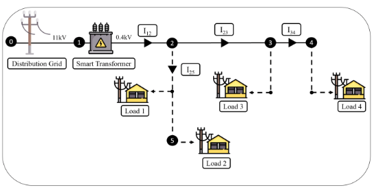
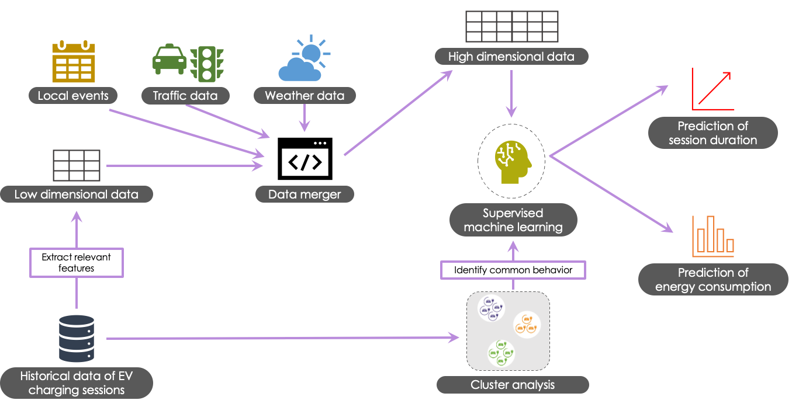
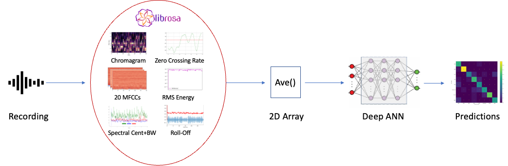
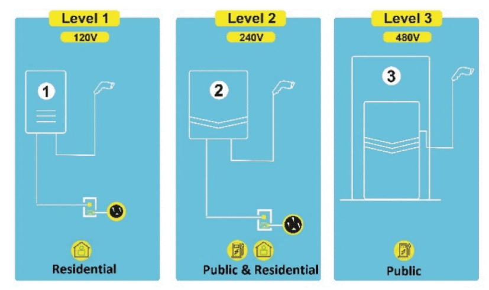

Publications
Generative AI and Large Language Models: A New Frontier in Reverse Vaccinology
Informatics in Medicine Unlocked, 2024 PAPERClimate Data Imputation and Quality Improvement Using Satellite Data
Journal of Data Science and Intelligent Systems, 2024 PAPER
The imitation game: Detecting human and AI-generated texts in the era of ChatGPT and BARD.
Journal of Information Science, 2024 PAPERArtificial intelligence in developing countries: The impact of generative artificial intelligence (AI) technologies for development.
Information Development, 2023 PAPERA Survey of Privacy Risks and Mitigation Strategies in the Artificial Intelligence Life Cycle.
IEEE Access, 2023 PAPER
Let’s Have a Chat! A Conversation with ChatGPT: Technology, Applications, and Limitations.
Artificial Intelligence and Applications, 2023 PAPERClassification of Arabic Poetry Emotions Using Deep Learning.
Computers, vol. 12, 5, p.89, 2023 PAPER

Machine Learning Approach for Smart Distribution Transformers Load Monitoring and Management System.
Energies, vol. 15, 7981, 2022 PAPERGAN Computers Generate Arts? A Survey on Visual Arts, Music, and Literary Text Generation using Generative Adversarial Network.
Displays, vol. 73, 102237, 2022 PAPERHow can generative adversarial networks impact computer generated art? Insights from poetry to melody conversion.
International Journal of Information Management Data Insights, vol. 2, 1, 2022 PAPERNarrative Integrated Career Exploration Platform.
Frontiers in Education, vol. 7, 798950, 2022 PAPERImpacts of COVID-19 on Electric Vehicle Charging Behavior: Data Analytics, Visualization, and Clustering.
Applied System Innovation, vol. 5, 12, 2022 PAPER
ANTi-Vax: A Novel Twitter Dataset for COVID-19 Vaccine Misinformation Detection.
Public Health, vol. 203, pp. 23–30, 2022 PAPERVaccine versus Variants (3Vs): Are the COVID-19 Vaccines Effective against the Variants? A Systematic Review.
Vaccines, vol. 9, 1305, 2021 PAPER

Prediction of EV Charging Behavior using Machine Learning.
IEEE Access, vol. 9, pp. 111576-111586, 2021 PAPER

Classifying Maqams of Qur’anic Recitations Using Deep Learning.
IEEE Access, vol. 9, pp. 117271-117281, 2021 PAPERImpacts of brine disposal from water desalination plants on the physical environment in the Persian/Arabian Gulf.
Environmental Research Communications, vol. 2, no. 12, p. 125003, 2020 PAPER

Machine learning approaches for EV charging behavior: A review.
IEEE Access, vol. 8, pp. 168980-168993, 2020 PAPERRefereed Conference Papers
-

Kadhim Hayawi, Sakib Shahriar, and Hany Alashwal. "Leveraging Nucleotide Dependencies for Improved mRNA Vaccine Degradation Prediction."
2023 20th ACS/IEEE International Conference on Computer Systems and Applications (AICCSA), pp. 1-6. IEEE, 2023, doi: 10.1109/AICCSA59173.2023.10479233.
-
Sakib Shahriar, Rozita Dara, and Kadhim Hayawi. “On the Impact of Deep Learning and Feature Extraction for Arabic Audio Classification and Speaker Identification.”
2022 IEEE/ACS 19th International Conference on Computer Systems and Applications (AICCSA), pp. 1-8, 2022, doi: 10.1109/AICCSA56895.2022.10017889.
-
Sakib Shahriar and Kadhim Hayawi. "NFTGAN: Non-Fungible Token Art Generation Using Generative Adversarial Networks."
2022 7th International Conference on Machine Learning Technologies (ICMLT), pp. 255-259, 2022, doi: 10.1145/3529399.3529439.
-
Muhammad Arbab Arshad, Sakib Shahriar, and Assim Sagahyroon. "On the Use of FPGAs to Implement CNNs: A Brief Review."
2020 International Conference on Computing, Electronics & Communications Engineering (iCCECE), pp. 230-236, 2020, doi: 10.1109/iCCECE49321.2020.9231243.
-
Felipe Vieira, Edmo J. Campos, Georgenes Cavalcante, Mohamed Abouleish, Sakib Shahriar, and Reem Mohamed. "Salt Budget in the Arabian Gulf and Effects of Water Desalination."
Ocean Sciences Meeting 2020. AGU, 2020.
-
Imran Zualkernan, Michel Pasquier, Sakib Shahriar, Mohammed Towheed, and Shilpa Sujith. "Using BLE beacons and machine learning for personalized customer experience in smart Cafés."
2020 International Conference on Electronics, Information, and Communication (ICEIC), pp. 1-6, 2020, doi: 10.1109/ICEIC49074.2020.9051187.
Education

University of Guelph
PhD in Computer Science
Research Interests: Large Language Models, Social Media Privacy, Ethical AI, Text Data Privacy

American University of Sharjah
MSc in Computer Engineering
Thesis: “Machine Learning-Based Approach for EV Charging Behavior”
BSc in Computer Engineering
Concentration: Artificial Intelligence and Internet of Things
University of Guelph, School of Computer Science
Graduate Teaching Assistant
Supervising the instruction of Information
Retrieval
graduate course with grading and conducting lab
sessions.
Guelph, ON, Canada September 2022 – Present
American University of Sharjah, Department of Computer Science & Engineering
Graduate Teaching Assistant
Supervised alongside faculty members in instruction of undergraduate labs, exams, and grading work. Courses supervised: Digital Systems and FPGA Design, Introduction to Programming.
Abu Dhabi, UAE June 2021 – June 2022
American University of Sharjah, Gulf Environments Research Institute
Graduate Research Assistant/Teacher Assistant
Worked with Dr. Edmo Campos’ research team on environmental impacts of desalination, including effects of desalination plants on Arabian/Persian Gulf temperature and marine lives. Assisted in the instruction of Communications Network undergraduate course.
Sharjah, UAE September 2018 - June 2020
Workshops Conducted
University of Guelph, McLaughlin Library
Writing the Literature Review Workshop for IDEV 3300
Conducted a 50-minute workshop for 30 undergraduates, focusing on research questions, organizing literature, and integrating sources. Utilized interactive discussions and multimedia tools to enhance engagement.
Guelph, ON, Canada
January 2024
Mentoring
Student Supervision And Mentorship
Ala Abu Hilal
Ala successfully defended his Master's thesis in December 2022. I mentored his research work alongside Dr. Kadhim Hayawi, who was the primary advisor.
Master of Science in Information Technology
Zayed University, Abu Dhabi, UAE
Reem Mohamed
Reem completed her undergraduate thesis in February 2020. I supervised her experiments alongside Dr. Edmo Campos to find the impacts of salinity on coral larvae. Her work resulted in two publications.
B. Sc. in Environmental Sciences
American University of Sharjah, Sharjah, UAE
Honors and Awards
-

School of Computer Science Summer Doctoral Scholarship, U of Guelph
April 2024
-
CSE Student Travel Grant awarded $1000 for attending the 19th International Conference on Computer Systems and Applications (2022)
January 2023
-
International Conference on Machine Learning Technologies (ICMLT) 2022 Best Paper Presentation Award
March 2022
-
2020/21 AUS Graduate Student Research, Scholarly and Creative Excellence Award, American University of Sharjah (AUS)
June 2021
-
CSE Graduate Research Excellence Award, Comp. Science & Eng. Dept, AUS, 2020
April 2021
-
Full Graduate Research Fellowship, Office of Graduate Studies, AUS
September 2019 – June 2021
-
Graduate Teaching Assistantship – Comp. Science & Eng. Dept., AUS
January 2019 – June 2019
-
ODAA Pioneer Scholarship - AUS Alumni Pioneer
September 2018 – December 2018
-
Hamid Jafer Scholarship, AUS
September 2017 – June 20018
-
American University of Sharjah Undergraduate Scholarship, AUS
September 2014 – December 2018
-
Dean’s List Scholarship, AUS
January 2017 – September 2017